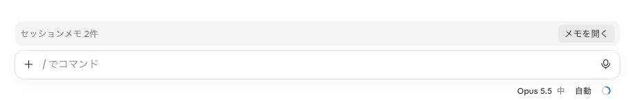
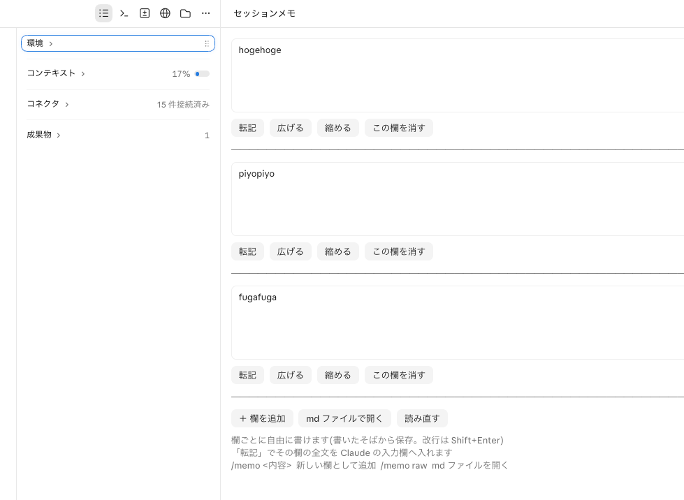

session-memo
Claude Code の横に置けるメモ帳。
書いておいたメモを、ボタンひとつで入力欄へ入れられます。
こんな感じ

入力欄の上に、いつも件数が出ます。

「転記」を押すと、その欄の全文が入力欄に入ります。
使い方
- 「メモを開く」か
/memoでメモを開く - 欄に書く（自動で保存。改行は Shift+Enter）
- 「＋ 欄を追加」で欄を増やせる
- 使いたいときに「転記」
入れ方
ターミナルで:
claude plugin install session-memo --marketplace 4lex-gs/claude-pluginsデスクトップアプリでは「＋」→「Plugins」→「Add marketplace」に 4lex-gs/claude-plugins を入れて、session-memo を追加します。